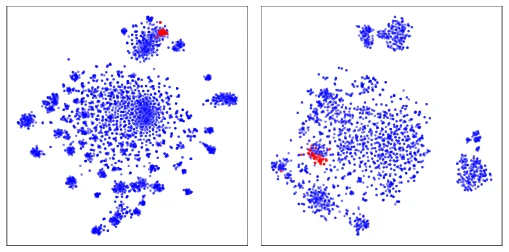
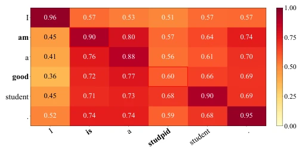
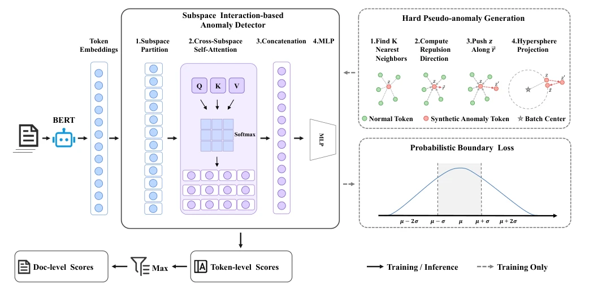
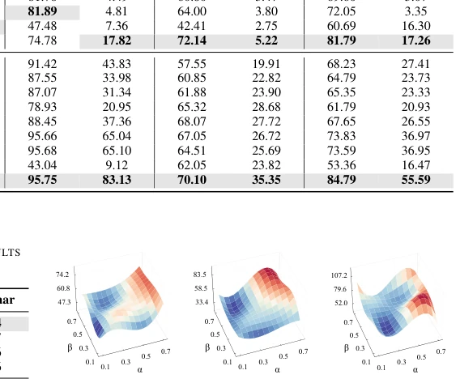
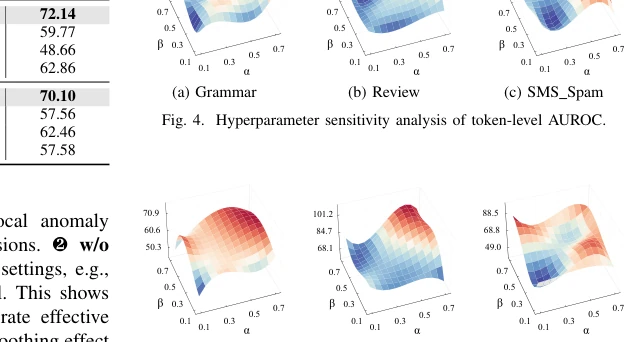
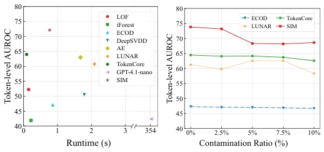
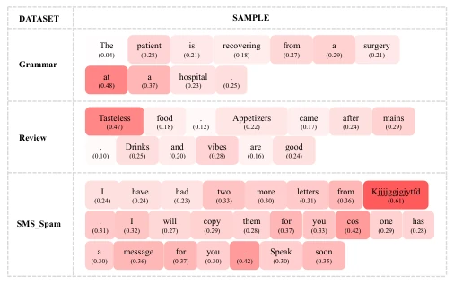

This paper adds another brick to the field of text anomaly detection, but this time specifically for Token-level localization. The SIM method attempts to solve the mess left by TokenCore: global distance calculations dilute local anomaly signals, and BERT's smoothing effect flattens surface anomalies. Although the authors claim this is "subspace interaction," sounding quite sophisticated, it essentially relies on feature decoupling and adversarial sample augmentation. The experimental results are indeed impressive, with AUROC leading the rankings, but GPT-4.1-nano's performance was shocking; does a large model perform worse than a specialized small model in fine-grained anomaly detection? This paper seems somewhat out of place in the embodied AI field, after all it is a pure NLP task, but as a baseline improvement for anomaly detection, it is still worth a look. It proves that on specific tasks, targeted architectures are more effective than general large models, but also exposes the inherent deficiencies of current PLMs in anomaly detection, and computational complexity analysis shows its efficiency is acceptable, suitable for actual deployment.
Fine-grained Token-level anomaly detection is a trend, capable of locating specific fragments of spam or fake news. However, existing methods like TokenCore [20] rely on global distance calculations, causing local anomaly signals to be diluted by redundant normal feature dimensions [21]. Furthermore, pre-trained language models (PLMs) like BERT [16] aim to optimize semantic similarity, smoothing out surface anomalies such as grammatical errors [22]. This leads to models struggling to distinguish Tokens that are semantically similar but structurally anomalous. Therefore, a method capable of capturing local signals and resisting smoothing effects is needed to achieve true fine-grained localization. Existing document-level detection cannot provide transparency, and while TokenCore opens a new direction, it is limited by the inherent defects of the distance mechanism and cannot effectively handle sparse local anomaly signals.

Fig. 1. t-SNE visualization of token embeddings on two datasets correspond- ing to different anomaly types: SMS Spam (SMS gibberish corruption) and Grammar (grammatical anomalies).

Fig. 2. Visualization of BERT embedding similarities. Grammatical variants (“am” vs. “is”) show high latent similarity, whereas semantically distinct tokens (“good” vs. “stupid”) show lower similarity scores.
方法Method
SIM 框架包含三个核心模块。首先是子空间交互检测器，将高维 Token 嵌入解耦为多个低维子空间，利用跨子空间自注意力机制动态捕捉交互信息，放大特定维度内的异常信号。其次是硬伪异常生成模块，通过距离扰动机制在特征空间构造与正常样本高度相似但缺乏语义结构的伪异常 Token，以此对抗 PLMs 的平滑效应。最后是概率边界损失，利用正常样本分数的均值和方差构建统计边界，将异常分数标准化为 Z-score，强制异常样本显著偏离正常分布中心，避免过拟合特定伪异常模式。此外，文档级分数聚合采用 Max Pooling 而非 Mean Pooling，以保留稀疏的强异常信号，防止被大量正常 Token 稀释，确保最终得分能反映最可疑的局部证据。
The SIM framework contains three core modules. First is the Subspace Interaction Detector, which decouples high-dimensional Token embeddings into multiple low-dimensional subspaces, utilizing cross-subspace self-attention mechanisms to dynamically capture interaction information and amplify anomaly signals within specific dimensions. Second is the Hard Pseudo Anomaly Generation Module, which constructs pseudo-anomaly Tokens highly similar to normal samples but lacking semantic structure in the feature space through a distance perturbation mechanism, thereby countering the smoothing effect of PLMs. Finally is the Probability Boundary Loss, which constructs statistical boundaries using the mean and variance of normal sample scores, standardizes anomaly scores to Z-score, forces anomaly samples to significantly deviate from the normal distribution center, and avoids overfitting specific pseudo-anomaly patterns. Additionally, document-level score aggregation adopts Max Pooling instead of Mean Pooling to retain sparse strong anomaly signals, preventing dilution by a large number of normal Tokens, ensuring the final score reflects the most suspicious local evidence.

Fig. 3. The overall pipeline of SIM for token-level text anomaly detection.
Validated on three datasets: Grammar, Review, SMS Spam. Baselines include LOF, iForest, TokenCore, and GPT-4.1-nano. Metrics are AUROC and AUPRC. SIM achieves the best performance at both Token and document levels, especially on SMS Spam where AUROC reaches 98.44. Ablation studies indicate that subspace interaction, pseudo-anomaly generation, and probability boundary loss are all indispensable. Efficiency analysis shows SIM is an order of magnitude faster than GPT-4.1-nano, and robustness performs excellently under data contamination. Interpretability visualization confirms the model can precisely locate anomaly Tokens. Compared to traditional methods, SIM significantly improves detection accuracy while maintaining efficiency, proving the effectiveness of its design.

Fig. 4. Hyperparameter sensitivity analysis of token-level AUROC.

Fig. 5. Hyperparameter sensitivity analysis of document-level AUROC.

Fig. 6. Performance evaluation on the Grammar dataset. (a) Efficiency analysis comparing various methods in terms of token-level AUROC and runtime. (b) Robustness analysis assessing AUROC stability under varying training data contamination ratios.

Fig. 7. Interpretability visualization of token-level anomaly attributions across different datasets. Darker shading corresponds to higher anomaly scores.